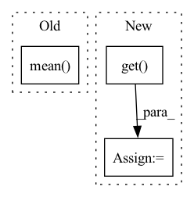

Pattern ID :28936
Before Change
pred = torch.cat(preds, dim=1)
if loss_dicts[0] is not None:
loss_dict = {k: torch.mean( [loss_dict[k] for loss_dict in loss_dicts]) for k in loss_dicts[0]}
else:
loss_dict = None
return pred, loss_dictAfter Change
// actions
b, input_length, _, _, _ = x.shape
empty_actions = torch.zeros(b, input_length + pred_length, device=self.device)
actions = kwargs.get( "actions", empty_actions)
for t in range(pred_length):
pred = self.pred_1(x, actions=actions)In pattern: SUPERPATTERN
Frequency: 3
Non-data size: 3
Instances Fragment ID: 85099218
Project Name: ais-bonn/vp-suite
Commit Name: d2c8cad7d7c2488018a286b7ca7224fda8eb73eb
Time: 2022-01-18
Author: boltres@ais.uni-bonn.de
File Name: vp_suite/models/unet3d.py
M Class Name: UNet3D
N Class Name: UNet3D
M Method Name: forward(3)
N Method Name: forward(3)
M Parent Class: VideoPredictionModel
N Parent Class: VideoPredictionModel
M File Name: vp_suite/models/unet3d.py
N File Name: vp_suite/models/unet3d.py
M Start Line: 75
M End Line: 98
N Start Line: 78
N End Line: 90
Before Change
beta2 = param_group["betas"][1]
eps = param_group["eps"]
denom = torch.add(
torch.sqrt(torch.mean( beta2 * exp_avg_sq) ), eps
) / math.sqrt(1 - beta2**step)
outputs.append(vector / denom)After Change
beta1, beta2 = param_group["betas"]
eps = param_group["eps"]
last_grad = state.get("last_grad", torch.zeros_like(vector))
exp_avg = state.get( "exp_avg", torch.zeros_like(vector))
exp_avg_sq = state.get("exp_avg_sq", torch.zeros_like(vector))
exp_avg_old = (exp_avg - (1 - beta1) * last_grad) / beta1
exp_avg_sq_old = (
exp_avg_sq - (1 - beta2) * last_grad * last_grad
) / beta2 Fragment ID: 85099219
Project Name: leopard-ai/betty
Commit Name: 831b8d6a8444a2c09aae0a7d37bb280b7b52ca55
Time: 2023-04-06
Author: sangkeuc@andrew.cmu.edu
File Name: betty/hypergradient/utils.py
M Class Name: AnonimousClass
N Class Name: AnonimousClass
M Method Name: precondition(2)
N Method Name: precondition(2)
M Parent Class:
N Parent Class:
M File Name: betty/hypergradient/utils.py
N File Name: betty/hypergradient/utils.py
M Start Line: 22
M End Line: 34
N Start Line: 21
N End Line: 41
Before Change
pl_penalty = (pl_lengths - pl_mean).square()
loss_Gpl = pl_penalty * self.pl_weight
loss_Gpl = (gen_img[:, 0, 0, 0] * 0 + loss_Gpl).mean() * float(gain)
loss_numpy["loss_Gpl"] = loss_Gpl.cpu().detach().numpy()
loss_Gpl.backward() // 咩酱：gain即上文提到的这个阶段的训练间隔。
After Change
if self.pl_weight == 0:
phase = {"Greg": "none", "Gboth": "Gmain"}.get(phase, phase)
if self.r1_gamma == 0:
phase = {"Dreg": "none", "Dboth": "Dmain"}.get( phase, phase)
blur_sigma = max(1 - cur_nimg / (self.blur_fade_kimg * 1e3), 0) * self.blur_init_sigma if self.blur_fade_kimg > 0 else 0
loss_numpy = {}
Fragment ID: 85099216
Project Name: miemie2013/miemiegan
Commit Name: c5e7ecffe23cf2fc2613ee06ec8fd94c8d7230ac
Time: 2022-03-24
Author: 53960695+miemie2013@users.noreply.github.com
File Name: mmgan/models/architectures/styleganv3_model.py
M Class Name: StyleGANv3Model
N Class Name: StyleGANv3Model
M Method Name: accumulate_gradients(9)
N Method Name: accumulate_gradients(9)
M Parent Class: torch.nn.Module
N Parent Class: torch.nn.Module
M File Name: mmgan/models/architectures/styleganv3_model.py
N File Name: mmgan/models/architectures/styleganv3_model.py
M Start Line: 140
M End Line: 251
N Start Line: 140
N End Line: 251